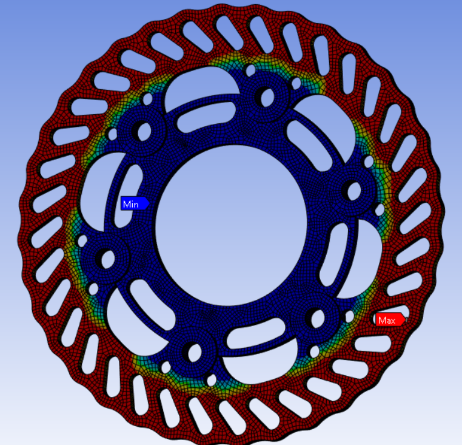

Optimisation of Suspension and Brakes System for FSAE
Anson Chua Mechanical Engineering · NUS Formula SAE
1. FSAE Overview & Competition Goals
Within the NUS Formula SAE organizational structure, the vehicle development is divided into two primary branches: Powertrain (Accumulator, Tractive, Low Voltage, and High Voltage) and Chassis (Aerodynamics, Frame, Vehicle Dynamics Suspension, and Vehicle Dynamics Laptime Simulation), alongside Future Systems development. The primary objective of the suspension system is to keep the tyres at an optimal angle relative to the ground to maximize all driving forces acting on the racecar.
Project objective and scope. This project designs the R27e brake system and the brake corner components it depends on (upright, hub and brake rotor). The objective is a corner assembly lighter than the R26 design that can still lock all four wheels and keep the front rotors below 350 °C through the Endurance event. Hydraulic sizing, rotor design, and structural and thermal validation are in scope. Suspension geometry and the regenerative braking control strategy are outside the scope, apart from making the hydraulic system work alongside regenerative braking.
1.1. R27e Suspension Architecture & Subsystems
The R27e suspension system integrates six core mechanical subsystems working in tandem to manage vehicle loads and driver inputs. The interactive model below shows the front and rear assemblies, with each key part labelled by name.
Figure 1: Interactive CAD model of the R27e front and rear suspension, labelled by part. Drag to rotate, scroll to zoom, right-click and drag to pan. Hover over or tap a label, a part or a subsystem below to highlight it.
Figure 1: R27e front and rear suspension CAD assemblies. Source: 27 Suspension, slide 3. The online report includes an interactive 3D model.
1.2. Team Competition Targets & System Goals
The overarching team competition goal is to achieve a Top 10 placement overall by maintaining strong scores in static events and placing Top 10 in dynamic events through the following performance targets:
Dynamic Event / Metric
Target Performance
Acceleration
4.0 s
Skidpad
4.99 s
Autocross
50.6 s*
Endurance
889 s*
Efficiency
3.8 kWh
To directly support these vehicle-level benchmarks, the subsystem goals are defined as follows:
Steering Goal: Maximize lateral acceleration to achieve the 4.99 s skidpad target while ensuring driver steering effort and fatigue remain within an acceptable range to finish the 22 km Endurance event.
Braking Goal: Ensure consistent, high-G braking performance across all dynamic events, directly supporting the Top 10 competition target.
2. Brake System Problem Statement & Objectives
Designing a high-performance braking system for a Formula SAE electric vehicle requires resolving the fundamental trade-off between thermal heat capacity and unsprung rotational mass.
The competition rules set the baseline. The brake system must act on all four wheels through two independent hydraulic circuits, and must lock all four wheels in the brake test. Electric vehicles must pass this test with the tractive system switched off [1]. Regenerative braking may use only the first 90% of pedal travel, so the hydraulic system alone must be able to stop the car [1]. The Endurance event covers about 22 km at average speeds of 48–57 km/h, with top speeds near 105 km/h [1], so the rotors absorb many stops in quick succession with little time to cool.
The value of this project is to meet these requirements with less mass than the R26 design. Lower unsprung mass helps the tyre stay in contact with the track over bumps [3], and lower rotor temperatures reduce brake fade [2]. Compared with R26, the design changes the rotor from elongated slots to circular perforations (Figure 5) and checks the rotor at several angular positions relative to the pads, rather than at a single position.
2.1. Thermal Fade & Unsprung Mass Penalties
Two primary engineering bottlenecks govern the brake system design:
Endurance Thermal Bottleneck: 22 km of continuous, repeated braking during the Endurance event generates extreme temperatures at the brake rotors. Excessive heat leads to lower braking efficiency via brake fade and structural brake rotor warpage [2].
Unsprung Mass Penalty: Oversized brake components heavily penalize unsprung mass and rotational inertia. This results in degraded vehicle dynamics: loss of mechanical tyre grip over bumps, higher steering effort (harder to turn), and slower transient suspension and acceleration response [3].
To overcome both unsprung mass penalties and thermal fade, the following quantitative design specifications were established for the R27e braking system:
Design Parameter
Target Specification
Engineering Rationale / Benchmark
Peak Deceleration
1.595 G
Ensure optimal brake balance of the car and full 4-wheel lock-up capability.
Corner Assembly Mass
Less than 1.20 kg
Achieves an 18% mass reduction compared to the prior year's assembly.
Operating Front Rotor Temp
350 °C Ceiling
Maintains rotor temperatures safely below the material yield softening threshold.
The optimization methodology follows a rigorous five-stage engineering workflow:
Torque Requirements: Calculating the exact required braking torque for both front and rear axles.
Component Selection: Sizing dual master cylinders and selecting friction pad materials and brake rotor alloys.
SolidWorks CAD: Detailed 3D modeling of custom components including the upright, hub, and brake rotor.
ANSYS Structural / Thermal FEA: Conducting finite element stress and thermal analysis to optimize strength-to-weight ratios and heat dissipation.
Why this approach. Scaling the R26 brakes by experience would be quicker, but it would carry over R26's mass and could not show whether a lighter design still locks all four wheels. First-principles calculation links every hardware choice to the tyre grip limit. For validation, hand calculations alone cannot capture stress concentrations around the rotor cutouts or upright mounts, and physical testing alone would need several manufactured iterations. FEA is therefore used to refine the design before manufacture, and physical testing (Section 5) confirms the final result.
3. First-Principles Brake System Calculations
Rather than relying on empirical heuristics, the braking architecture was derived from first-principles vehicle dynamics to match hydraulic braking torque supply against tire tractive capacity demand.
3.1. Tire Capacity vs. Optimal Braking Force
By plotting the Tire Capacity Braking Force (Supply) against the Theoretical Optimal Braking Force (Demand) across deceleration levels (G), the exact lock-up threshold for each axle is identified. Because longitudinal weight transfer shifts normal load heavily onto the front axle during deceleration [3], the rear tires converge earlier while the front tires are prioritized for peak stopping power.
Total tractive braking force is governed by Newton's second law (F = ma), where the front tractive force equals the total required braking force minus the rear tire capacity. From the polynomial convergence curves, the front braking force demand intersects the front tire capacity limit at exactly 1.595 G.
Figure 2: Front and rear braking force demand and tyre capacity versus deceleration. Source: 27 Suspension, slide 12. Open the image at full size to read the equations and legend.
3.2. Force, Pressure & Hardware Sizing
Using Goal Seek optimization around the 1.595 G peak braking target, the longitudinal forces, hydraulic inline pressures, and master cylinder bore sizes were finalized:
Category
Parameter
Calculated Value
1. Vehicle Dynamics
Peak Braking Deceleration (Goal Seek)
1.595 G
Front Longitudinal Braking Force
1684.71 N
Rear Longitudinal Braking Force
350.123 N (Total: 2034.83 N)
2. Force & Pressure
Front Braking Torque
663.78 Nm
Rear Braking Torque
137.95 Nm
Front Hydraulic Inline Pressure
6.80 MPa
Rear Hydraulic Inline Pressure
3.37 MPa
3. Hardware Sizing
Master Cylinder Bore Size (Front / Rear)
15.8 mm / 25.4 mm
Mechanical Brake Bias (Front)
0.41
Driver Pedal Effort (Hard Braking)
763 N
4. Structural & Thermal FEA Analysis
To ensure structural integrity under extreme racing loads while meeting the sub-1.20 kg corner mass target, finite element analysis (FEA) was performed in ANSYS across both structural and thermal domains.
Prototypes developed this semester. The prototypes at this stage are digital. SolidWorks models of the upright, hub and prototype rotor define the geometry to be manufactured, and ANSYS models of these parts act as virtual test specimens. The purpose of these models is to confirm strength and thermal performance, and to remove excess mass, before parts are machined in the manufacturing phase (Section 5.2).
The purpose of the structural tests is to confirm that the upright and suspension assembly reach a minimum factor of safety of 2.0 in every critical load case, and to find low-stress material that can be removed. The quarter-car (Qcar) suspension and upright assembly was simulated across 9 distinct extreme load cases:
Pure Acceleration, Pure Braking, and Pure Cornering
Combined Acceleration while Cornering, and Braking while Cornering
By evaluating the simulated stress distributions across the upright and suspension linkages, excessive low-stress material was removed to optimize component mass, while highly stressed mounting features were reinforced to guarantee a minimum Factor of Safety (FOS) of 2.0.
Figure 3: ANSYS structural analysis contour plots of the suspension assembly (left) and upright (right). Source: 27 Suspension, slide 14.
4.2. Rotor Geometry & Material Selection
The brake rotor geometry was engineered around three core objectives: optimizing weight, allowing uniform radial and circumferential thermal expansion without inducing internal thermal stresses, and maximizing convective surface area for rapid cooling to lower operating temperatures.
A weighted decision matrix (scored 1 = Worst to 3 = Best) was used to evaluate three candidate rotor materials:
Selection Criteria
Cast Iron
4130 Steel
17-4PH Stainless Steel
Density
3
1
1
Deformation Resistance
1
3
3
Thermal Conductivity
3
2
1
Cost
3
2
1
Friction (μ) Dependency on Temp
1
3
2
Ductility
1
2
3
Net Score
12
13 (Selected)
11
4130 Steel achieved the highest net score (13 points), offering superior resistance to thermal deformation, stable friction coefficient across operating temperatures, and good ductility compared to brittle cast iron.

Figure 4: ANSYS model of the brake rotor and hub. Source: 27 Suspension, slide 15.
Figure 5: R26 rotor with elongated slots (left) and the R27e prototype rotor with circular perforations (right). Source: 27 Suspension, slide 19.
During thermal simulation modeling, three physical constraints and limitations were identified:
Transient Convective Heat Transfer Coefficient: The cooling rate coefficient of the brake rotor is not constant in reality, fluctuating continuously with vehicle trajectory and speed.
Complex Upright & Wheel Well Aerodynamics: Airflow around the brake rotor is highly turbulent because it is tucked inside the wheel rim, requiring computational fluid dynamics (CFD) to characterize accurately.
Frictional Contact Mechanics & Thermal Partitioning: As the rotor heats up and experiences micro-warpage, uneven contact pressure develops between the brake pads and rotor surface.
To account for rotor rotation during braking, a multi-step simulation methodology was implemented:
Calculate peak heat flux generated during maximum deceleration to simulate hard braking and determine the maximum brake rotor temperature.
Simulate subsequent braking from average track speed using the maximum rotor temperature as the initial thermal condition.
Repeat the thermal and structural simulations across discrete angular orientations of the brake rotor at 15°, 30°, 45°, 60°, and 75° to accurately stress-test the slotted cutout geometry as the rotor spins past the caliper pads.
5. Problems, Shortcomings & Project Plan
Semester 1 has focused on design and simulation. The remaining work addresses the shortcomings below, then moves into manufacturing and physical testing.
5.1. Problems Faced & Proposed Resolutions
Problem or shortcoming
Effect on the results
Proposed resolution
A rotating rotor cannot be modelled directly in a static thermal analysis.
Hot spots under the pads would be missed.
Resolved: the rotor is analysed at 15°, 30°, 45°, 60° and 75° positions (Section 4.3).
The convective heat transfer coefficient is assumed constant.
Rotor temperatures over a full lap may be over- or under-estimated.
Build a multi-step transient thermal analysis over a full lap profile, then compare it with rotor temperatures measured during track testing.
Airflow inside the wheel is turbulent and unknown.
The cooling rate used in the simulation is uncertain.
Bound the result with low and high cooling cases now, and refine it with CFD or test data later.
Uneven pad–rotor contact from micro-warpage is not modelled.
Local temperatures and wear may differ from the simulation.
Inspect the rotors for warpage and uneven pad wear after each test session.
The calculations are not yet validated on the car.
Real brake balance and lock-up behaviour are unconfirmed.
Brake tests with the tractive system off to confirm four-wheel lock-up, then bias tuning and integration with regenerative braking.
Further iterations of the rotor cutout geometry will also be analysed to reduce mass while keeping the highest factor of safety.
5.2. Project Plan & Milestones
The project runs from July 2026 to May 2027 in four phases, each ending in a measurable milestone:
Project phase
Timeline
Milestone
1. Design
July 2026 – October 2026
Brake calculations complete; upright, hub and rotor CAD frozen
2. Simulation
August 2026 – November 2026
Minimum FOS of 2.0 in all 9 load cases; front rotor below 350 °C
3. Manufacture
November 2026 – December 2026
Rotors and uprights machined; corner assembly weighed against the 1.20 kg target
4. Assembly and Testing
December 2026 – May 2027
Four-wheel lock-up demonstrated; brake bias tuned; regenerative braking integrated; transient thermal model compared with track data
References
SAE International. Formula SAE Rules 2026, Version 1.0. Brake system, brake test and endurance event requirements.
Limpert, R. (2011). Brake Design and Safety (3rd ed.). SAE International.
Milliken, W. F., & Milliken, D. L. (1995). Race Car Vehicle Dynamics. SAE International.
NUS Formula SAE (2026). 27 Suspension [internal team presentation]. Source of Figures 1–5.